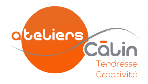
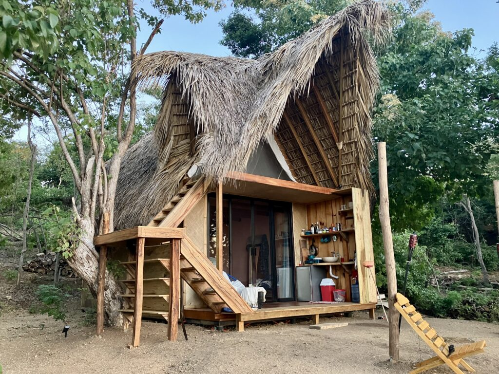

Who I am

At first there is my taste, my love of the feminine, the impulse to take care of her. Then, as the water flows into the fold, I was where I was fed ; observing, questioning, experimenting, also feeling this part of feminine in me, working at welcoming it, to give it space.
This is the way between subject of study and perception, something slowly weaved between me and the feminine, between the women and me. A familiarity. Since then, I glimpsed how this echo was « my » note to play, to vibrate, my contribution.
The maturation took long to become « the Craftsman ».
A career in tourism, a path in personal fulfillment, Tantra. A long passion around what touches the body and intimacy. And then, after three years creating space for collective workshops around tenderness, I felt it was time to weave both of them.
So here we are, gathering all of what I am, with humility and sensitivity, proposing this offer. She is welcoming and caring, like a bridge between two shores. I don’t know if this proposition is good for you ; you have to feel it, grab this hand that lends itself towards you, or not. Trust your intuition. If it is right, if it is the right moment, then we will meet and live what needs to be lived.
Tenderly towards you.
Eric
Faq
-
Est-ce vraiment possible de se câliner en dehors de toute connotation sexuelle ?
Et bien, figurez-vous que oui ! Nos moeurs nous ont habitués à associer échange corporel et sexualité. Est-ce une raison pour s’en satisfaire ?
Nombreuses sont les calineuses qui décrivent comment elles se retrouvent à partager de la sexualité, alors qu’en fait, c’est de douceur affectueuse dont elles ont envie. Quant aux câlineurs, c’est souvent stupéfaits qu’ils découvrent leur besoin de tendresse. Ils et elles témoignent que le contact des corps, la chaleur et la douceur sont déjà si bénéfiques…
-
Et comment partager de l’affection avec des inconnus ?
Là encore, il est troublant de constater comment c’est plus simple qu’il n’y paraît. Et puis le contact ne vient pas tout de suite, il y a d’abord du mouvement et des jeux favorisant la rencontre avec l’autre. Dans cette heure « de préparation », le lien se tisse entre les participants, la confiance s’installe. Il est alors bien plus facile d’aller vers ceux avec lesquels la connexion a été fluide, particulièrement si l’on est libre de toute obligation.
-
Vos ateliers ne sont-ils pas un prétexte au libertinage ?
Franchement, si mon intention était de vous y entrainer, pourquoi dans ce cas créer ce concept des Ateliers Câlin ! Et puis, la planète échangiste possède déjà une offre consistante qui trouve un public ; si c’est ce type de contacts que vous cherchez, nos ateliers risquent fort de vous décevoir.
Ce que nous proposons est « du corporel en conscience », pas la fête foraine ! On se régale tout autant, en restant juste avec soi et avec les autres.
-
Et si jamais je suis excité, cela pourrait-il être gênant ?
Vous l’avez compris, l’idée n’est pas de « s’exciter ». Cependant, les lois du corps sont ce qu’elles sont. Alors si palpitation il y a, pourquoi d’abord ne pas se réjouir d’être vivant et accepter cette manifestation en provenance de nos sens. Enfin, en prendre la responsabilité et ne pas la reporter sur l’autre. Accueillir ce qui est là, tout simplement.
-
Est-ce que vos ateliers sont ouverts à tous ?
Le principe est justement d’être ouvert à tous. Et le cadre bienveillant et sécurisant que nous créons, favorise l’expérience, le bien-être et le progrès.
Cependant, se mettre en contact corporel avec des inconnus n’est pas neutre. Il faut être en capacité d’aller vers les autres, mais aussi d’être dans le mouvement. C’est pourquoi nos ateliers s’adressent à des personnes en bonne santé physique et psychologique.
Ce sera le but de l’échange téléphonique validant votre inscription, de répondre à vos questions et de lever vos doutes ; à chacun ensuite d’être responsable.
-
Est-ce réservé aux célibataires ou peut-on venir en couple ?
Bien que nos ateliers soient pour les célibataires propices à des rencontres authentiques, dans un cadre fraternel et sûr, les couples sont les bienvenus. Je vous recommande dans ce cas de bien définir avant l’atelier le cadre de l’expérience et l’intention de chacun.
-
Et si je ne veux pas câliner ou être câliné ?
Comme défini dans nos règles, « personne n’est là pour se forcer d’aucune manière, ni à être câliné, ni à câliner. C’est le point central de notre contrat moral ». Cependant, l’expérience vous apprendra peut-être que ce que nous pensons des autres spontanément, est le plus souvent le fruit de nos projections. Pourquoi alors ne pas donner sa chance au ressenti, se respecter tout en gardant l’ouverture à l’autre ; et à tout moment, nous sommes là pour vous aider a trouver la bonne distance.
-
Et si je fais une proposition et qu’elle n’est pas acceptée ?
Il est difficile de se détacher de la peur d’être rejeté. Pour autant, apprendre à vivre avec cette possibilité est un savoir-être qui se construit. Accepter de n’être pas au goût de tout le monde, tout comme nous avons nous-même nos préférences, contribue a créer son propre espace d’amour de soi et de liberté. Nous vous y aidons.
-
Pourquoi n’est-il pas possible de s’embrasser ?
Ah le baiser ! N’est-ce pas un élément essentiel du pacte érotique et n’avons nous pas tous constaté ces effets calorifiques ? Et bien justement, l’idée de nos ateliers n’est pas de monter en température, mais d’expérimenter d’autres types de contacts. Ce qui n’interdit pas un tendre baiser sur les lèvres, comme on le déposerait sur une joue ou un front.
Quelques définitions
Quelques définitions, afin de parler le même langage ; et puis c’est si beau !
(source Wiktionnaire)
Amour \a.mu?\ masculin
J’opterai pour pour la définition d’Isabelle Padovani :
- « L’amour c’est avoir l’élan de nourrir les besoins de l’autre et que ce soit confortable pour soi »
Artisan \a?.ti.z??\ masculin
- Celui qui exerce un métier manuel, qui suit les règles d’un art établi
- Celui qui est l’auteur, l’origine de quelque chose
Atelier /a.t?.lje/ masculin
- Lieu où se fait un travail manuel
- Se dit aussi du lieu où travaille un artiste
Caresse \ka.??s\ féminin
- Témoignage d’affection, de tendresse ou de sensualité que l’on donne à quelqu’un, en geste ou en paroles
Créativité /k?e.a.ti.vi.te/ féminin
- Capacité, faculté, d’inventer du nouveau ; imagination appliquée
- Partie d’un processus de conception qui se situe après l’analyse et avant la synthèse
Instinct \??s.t??\ masculin
- Du latin instinctus, qui signifie « impulsion »
- On peut considérer que l’instinct est quelque chose d’intérieur qui, une fois mêlé à la prévoyance et à la conscience, guide les êtres humains vers un comportement intégral
Intégrité /??.te.??i.te/ féminin
- État d’un tout, d’une chose qui est dans son entier
- Vertu, qualité d’une personne intègre
Intime \??.tim\ masculin et féminin identiques
- Profondément intérieur, en parlant surtout de ce qui fait l’essence réelle d’une chose
- Qui lie étroitement certaines choses entre elles
Joie /?wa/ féminin
- Sentiment de bonheur, de satisfaction vive et intense qui vient du plaisir que l’on a à agir, à contribuer à un certain progrès qui est empreint d’un caractère spirituel, philosophique, scientifique, religieux ou esthétique
- Plaisirs, jouissances
Présence \p?e.z??s\ féminin
- Existence d’une personne dans un lieu donné
- Ubiquité de Dieu
Raffinement /?a.fin.m??/ masculin
- Extrême subtilité, délicatesse particulière
- Excès de recherche que l’on met en certaines actions, en certaines habitudes de la vie
Règle /???l/ féminin
- Instrument qui sert à guider la main quand on veut tracer des lignes droites
- Principe, enseignement et généralement tout ce qui sert à conduire, à diriger l’esprit et le cœur
- Préceptes qui servent à enseigner les principes et les méthodes qui en rendent la connaissance plus facile et la pratique plus sûre
Sens /s??s/ masculin singulier et pluriel identiques
- Signification, ce que quelque chose veut dire
- Faculté de percevoir les impressions faites par les objets extérieurs
- Direction de circulation d’un flux
Sensualité /s??.s?a.li.te/ féminin
- Attachement aux plaisirs des sens
Simplicité /s??.pli.si.te/ féminin
- Caractère de ce qui n’est pas compliqué, sans apprêt, sans recherche
- Qualité de ce qui est sans détours, sans déguisement
Soin \sw??\ masculin
- Application d’esprit à faire quelque chose ; attention à veiller au bon état de quelque chose, au bien de quelqu’un
- Fonction de prendre soin de quelque chose ou de quelqu’un, d’y veiller, attentions que l’on a pour le soulager
Tendresse /t??.d??s/ féminin
- Qualité de ce qui est tendre ; sensibilité à l’amitié, à l’amour, aux affections de la nature
- Amour, caresses, témoignages d’affection
Toucher /tu.?e/ masculin
- Action de toucher ou la manière de toucher
- Un des cinq sens consistant à entrer en contact avec la peau pour découvrir quelque chose ou quelqu’un
Ressources
Je suis heureux de vous partager les pratiques et les personnes qui m’ont le plus nourri sur mon chemin.
Une occasion de leur rendre hommage et peut-être de vous inspirer.
Ana Rodriguez
Soirée câlin en Suisse, stage de développement personnel et cercle de femmes en France ; merci pour qui tu es Ana.
« Puissions-nous ne jamais revenir en arrière… ».
- Autour du Tantra
Yves-Marie L’Hour
« Je sens la tristesse, je ne suis pas triste ».
Nava-Tantra : A la Source du Désir
Laurence & Laurent
« Est impur le fait de considérer que quelque chose puisse l’être ».
SkyDancing Tantra
« La structure que nous vous proposons… »
- Autres propositions
Respiration Holotropique avec Patrick Baudin
« Grand Esprit, Grand Mystère… »
Coeur de Soha
« Vers l’ouverture du coeur par les chants médecines »
Cuddle Workshops Paris

In 2013, without any commercial intent, I committed everything I am to this contribution project. At the time, in Paris, tenderness was reserved for the Milka advertising « Dare tenderness » !
The concept of the Hug workshop is to rehabilitate tenderness, at the service of self-discovery and authentic exchange. Then offer other types of group workshops to accompany the transformations (Great evening hug, Workshop Touch & Creativity, Vigil – Free Word between men & women), as well as a « Member Space » for an outdoor meeting.
Today, while several proposals around tenderness have emerged and our Workshops are moderated by Magali, life calls me to other forms of expression.
More info HERE
Music
Music is a gift.
Essential in my life, often very present in my proposals, it is known to open ways towards the invisible and guide hearts.
I like when she affects me, at the edge of sensitivity, and connects me to the main part : Beauty, joy and love.
I like as well sharing her, as here, to maybe let her infuse you while you are visiting the contents of the site, to see if there is an echo between my sensibility and if one day we shall join the notes to gesture. Bon Voyage.
– The following three playlits were recorded with my Iphone simply placed on the floor. No editing has been done. You can also download the files. Enjoy & gracias por la vida.

A Kirtan season at the Yoga Forest
(January/April 2019)
Thank you to Saraswati and Jayananda, who supported us with this humility that does just what it takes to allow everyone to be welcomed and to participate, in the magic of « together ». Embodying joy, affinity and loving presence in such precious simplicity. Allowing an opportunity to feel unity, rather than overwhelming us with an injunction « to be ». Offering us at least the wonderful, and sometimes, when the collective is fully engaged in the experience, the ultimate. Like this April 16th, when, in a sublime connection, creativity and beauty culminate and grace flies away.
Thank you to all those who contributed to these délicate, melodic and inspired journeys. To make a record of this possible and of my gratitude, I give you my selection of our co-creations ; a tangible testimony of the sensitive reality of our incarnations and the benevolent generosity of the universe.

« Five star hippie life »
(January/April 2019)
Here are some sound excerpts from my « daily life » in San Marcos at the beginning of 2019. The Eagle’s Nest, which after the Ecstatic Dance offered us some nice moments around the fire. Then, from the so delicious Rosy, the « Five star hippie life », named after the collective that was born in El Castillo and continued in Sweet Home San Marcos. Listening to « Eclipse », with Josy’s laughter, never ceases to plunge me into a melancholic jubilation. What journeys. Such gratitude.

The sound of Inanitah…
(April/May 2018)
Thank you brothers and sisters for these moments of music and songs, your talents, your generosity, your sensitivity. Thank you nature for having been with us, above our heads, all around the sound space, where the wind and the fire cradle the choir of insects and sometimes another créatures joins as a soloist. Facing a volcano, sitting on the flanks of an other, on the rocks that he spat down into the lake at our feet, voices and notes dance in the glow of flames, mingle with our laughter and sweet sigh where gratitude is blissful.
I honor this form of « Hippie Sangha » that connects worlds and beings in song, presence and joy, celebrating life and love. Aho Cacao ;-)
My last favorites
Touching
Movement
Leurs témoignages…
« Bonjour Magali, Merci pour cette première soirée de câlins. Je me suis régalée, je suis sortie sereine, apaisée, avec davantage de confiance en moi. »
Martine
—
« Bonsoir Magali, je te remercie pour l’expérience. J’ai expérimenté plusieurs choses : que je pouvais faire mes propres choix et que ça me rendait plus heureux, j’ai aimé faire ce que je ressens, la joie de ne pas me soucier du regard des autres, plus de conscience et un moment très plaisant autour de gens amicaux et bienveillants. Merci encore et à très vite. »
Stéphane
—
« Bonjour Magali, Encore mille mercis pour hier soir, mon premier Atelier Câlin était fabuleux et tellement fort en émotions et en retour en moi même. Tu as une façon incroyable de nous mettre à l’aise et mon stress est passé super rapidement. »
Arnault
—
« Bonjour Magali, Je te remercie encore pour cette belle et agréable soirée Câlins. On y défait les nœuds du quotidien. Pour te dire aussi, j’y ai trouvé chez toi une belle personne sensible, touchante et à l’écoute des autres. »
Jean-Marc
—
« Bonjour Magali, Un énorme merci pour les Ateliers Câlins, ta présence, ton authenticité, ton amour, ta tendresse ; les Ateliers, c’est le groupe mais… c’est toi. Ton émotion m’a touché hier… direct au cœur… parce qu’elle est vraie ! Ta bienveillance omniprésente est un bonheur à observer, à accueillir ! Merci. »
Olivier
—
« L’Atelier Câlin m’a complètement chamboulée, c’est très fort et très doux. »
Sylvie
—
« Certains soirs, je suis arc-en-ciel, Rencontres, partages, étreintes, Plume et gratitude, Regards, contacts, connexions, Surprise et gratitude, Fiesta, mêlée, rires, Insouciante et gratitude, Donner, recevoir, Câlins, Douceur et gratitude, Certain soir, je deviens lumière, Amour et gratitude. Merci Magali ! Je t’embrasse. »
Sophie
—
« Encore merci pour cet atelier que je découvre. Je suis touché par la façon dont tu tisses la progression de la soirée doucement, progressivement, et en faisant de chaque étape une pleine expérience sensorielle et de partage. J’ai vécu des choses très belles dans ces domaines. »
Gilles
—
« Merci beaucoup Magali cet atelier qui commence dans la joie, la tendresse et l’amour grâce à toi ! Je prends de plus en plus de plaisir à venir car mes résistances du début s’estompent et à chaque fois je prends une dose de risque personnel qui me permet d’ouvrir des portes jusqu’ici condamnées ! Merci encore ! Bien tendrement. »
Marcel
—
« Merci Magali pour nous proposer ces superbes Ateliers ! La soirée a été pour moi vivante, câline, libérée, respectueuse, yin, yang, surprenante, profonde, belle, connectée. Je reviendrais avec joie. »
Fabien
—
« Ces quelques mots pour te dire tout le bien que m’a fait cette soirée, moi qui adore les câlins, avec toutes ces personnes simples, agréables. Cela a été un moment de plongée dans des sensations profondes, trop inhabituelles, un monde de douceur. Cela fait tellement de bien, câlinement. »
Guy
—
« Encore un grand merci pour cette soirée. C’était une belle découverte pour moi ! Mon métier consistant notamment à animer des groupes, j’ai également été impressionné par l’aisance avec laquelle tu as posé un cadre très protecteur et instauré un climat profondément bienveillant, et ludique aussi. Big warm hugs. »
Jean-Marc
—
« Merci Magali pour la qualité de tes ateliers ! Je suis intéressée par tout ce que tu proposes ! »
Marie-Pierre
—
« Je voulais te remercier pour l’Atelier Câlin, j’ai aimé ce voyage dans le pays de la tendresse. A bientôt. »
Arnaud
—
« Un énorme merci pour l’Atelier Câlin d’hier soir. J’ai vécu un moment très fort et très doux. Bouleversant ! Tu portes, avec ton extraordinaire énergie, cette soirée ! Une très jolie co-création ! Merci encore. »
Olivier
—
« Simplement un grand merci pour l’expérience d’hier c’était fantastique et je me suis rarement senti aussi bien à la fin de la soirée et encore maintenant ! J’espère avoir l’occasion de recommencer très vite ! »
Michel
—
« J’ai été comblé par la soirée passée à l’Atelier Câlin. J’ai apprécié l’animation fluide, précise et sécurisante. Des exercices progressifs qui m’ont ouvert le coeur et fait grandir le plaisir d’être là jusqu’à me sentir suffisamment bien pour ne pas regretter de partir. J’ai aussi beaucoup aimé les musiques qui ont délicieusement participé à mon lâcher-prise… L’effet câlin se prolonge encore… »
Denis
—
« Merci pour cette découverte d’expériences de partages, entre personnes de tout horizon, dans ce cadre très attentionné et très doux, que tu apportes au groupe.
J’ai trouvé l’expérience hyper intéressante sur différents plans. Il y a un aspect de la connaissance de soi (toujours assumer et à travailler parfois vers une transformation) ; connaissance de l’autre, ou même re-connaissance de l’autre dans la réconciliation (…). Donc Magali… Bravo ! »
Fabrice
—
« J’ai beaucoup aimé mon premier Atelier Câlin, j’y ai trouvé beaucoup de bienveillance et de bon contact et trouvé l’animation de Magali juste et adéquate. J’ai passé un délicieux moment et comme j’aime le contact humain et vis seule, cela me fait beaucoup de bien. »
Régine
—
« Ce fût un moment merveilleux mercredi. Quelle chaleur ! Ce qui c’est passé ce soir a dépassé, et de loin, ce que je me suis imaginé avant d’arriver. Je peux te dire que j’ai vécu les plus beaux et les plus tendres moments de ma vie. Merci. »
Sylvain
—
« Merci Magali pour cette belle soirée découverte…qui engendre de puissantes émotions… »
Jeannie
—
« Coucou Magali, merci pour cette soirée super douce hier, cela m’a fait beaucoup de bien et m’a apaisée. »
Caroline
—
« Un Grand Merci pour une expérience de grande qualité, grâce à ton animation formidable, et d’une dynamique de groupe tellement sympathique et de grande qualité. J’ai hâte de poursuivre le voyage. Un grand merci de tout cœur pour ton œuvre magnifique et magique ! »
Brian
—
« Merci encore pour cette toute douce soirée magique !!! Mais quel bonheur !!!!!
MERCI à toi pour ta bienveillance et ta présence joyeuse, rassurante, dynamique, Bref… J’ai kiffé. »
Olivier
—
« Merci pour cette belle soirée d’hier. Cela me fait tant de bien… »
Marie-Pierre
—
« Eh oui, je deviens addict à tes soirées, toujours pleine de tendresse et dans la bienveillance. »
Annie
—
« C’était tellement fort ! C’est tellement riche d’apprentissage sur soi ! Ça me touche… Merci à toi +++++ »
Olivier
—
« Chère fée Magali, Oui, comme le chocolat reste délicieux, cette troisième soirée Ateliers Câlin a été encore merveilleuse. Quelle magie de se voir transformer en quelques heures, d’un état fatigué et triste à une sensation de bonheur intérieur et joyeux ! Une sensation d’amour envers tous !
Fée Magali a le savoir-faire pour nous amener à nous rencontrer, à nous découvrir, estomper les barrières, nous aider à contacter notre immense puissance d’amour intérieure et ignorée. Nous aider à exprimer une des plus belles partie de nous-même…
Fée Magali est aussi une grande organisatrice qui sait guider le groupe avec grâce, tendresse, efficacité, adaptation et tolérance.
Fée qui nous aide si bien pour des câlins magiques, encore merci mille fois Magali ! Câlinement à toi. »
Denis
—
« Chère Magali, Tout d’abord te refaire part de tout l’enthousiasme que j’ai eu à participer à cet Atelier Câlin. Je suis venue avec un peu de trac, je suis repartie avec plein de joie et d’amour en moi.
Merci pour ce bel espace que tu proposes et merci pour l’authenticité, la délicatesse, la joie, l’écoute, le vivant avec lesquels tu guides ces ateliers. A très bientôt ! »
Sophie
—
« Bonjour Magali, Je partage avec bonheur ta félicité à vivre l’extraordinaire aventure des Ateliers câlins et t’en remercie du fond du cœur. Je t’embrasse tout doux. »
Martine
—
« Bonjour Magali, l’atelier d’hier fut un délice, comme toujours. Comme je disais à une habituée, une fois que l’on a goûté à tes ateliers, on devient addict ! »
Annie
—
« Coucou Magali, merci encore pour cette belle et magique soirée ! Je suis encore sur un petit nuage… Je n’ai qu’une hâte, revenir vite aux Ateliers Câlins ! A très vite. »
Julie
—
« Chère Magali, j aimerai inventer un mot qui dirait encore plus que MERCI. Atelier magique…et les guérisons continuent… C’est vraiment ENORME, le bien-être que cela apporte grâce à ton énergie et au cadre que tu y déposes. Douce étreinte. »
Jeannie
—
« Merci pour cette belle soirée riche en émotions, douceurs et retrouvailles ! Je t’embrasse à très bientôt ! »
Michel
—
« Coucou Magali, merci pour cette magnifique soirée d’hier, je me suis sentie dans une bulle de douceur. Quelle émotion et quelle joie ! Belle journée lumineuse à toi, bisous. »
Caroline
—
« La première fois m’a fait un bien fou alors j’ai envie de renouveler l’expérience… »
Aïda
—
« Bonsoir Magali, A mon tour de te remercier pour ce moment de grâce que fût le 100ème Atelier Câlin, et le premier pour moi. J’ai emporté avec moi comme un cadeau précieux la douceur ressentie, certains mots doux, l’ouverture de coeur vécue. Tendrement. »
Séverine
—
« Merci Magali pour ces paillettes de vie. »
Joël
—
« Merci Magali pour ce très bel atelier de vendredi ! Merci de toute la lumière que tu nous fais partager et de la justesse avec laquelle tu mènes ces ateliers ! »
Marie-Pierre
—
« Merci du fond du coeur pour tous ces partages enrichissants, nourrissants, délicieux, émouvants.
L’affectivité au coeur des besoins de chacun.
Magali, tu es une déesse des temps présents, qui transforme les lendemains en réconciliation, espoir et joie.
A bientôt pour d’autres belles aventures en conscience. Je t’embrasse. »
Jeannie
—
« Magali, Merci pour cet atelier d’hier plein d’émotions pour moi.
Merci de toutes les petites étoiles qui brillent en toi et que tu allumes en nous !
Tendres bises. »
Marie-Pierre
—
« Magali, cet espace que tu nous offres est magique. C’est simple, je suis heureux de venir (tel un gamin qui va jouer), je vis un moment de lâcher-prise plein de goût et je suis en paix ensuite. Ces quelques Ateliers que j’ai vécus m’ouvrent une perception du féminin que je n’avais jamais touchée aussi simplement. Nous nous émerveillons, nous grandissons en tant que femmes et hommes.
Ce qui est unique avec tes Ateliers, c’est la simplicité ! Juste être. Merci d’être. »
Dimitri
—
« Coucou, je ne trouve plus de mots pour dire que ces soirées font un bien fou…. merci. »
Jeannie
—
« Bonjour Magali, Un énorme MERCI pour cette soirée d’hier, c’est… fort, très riche d’apprentissages, de partages. Je dis WAHOU ! Ta « façon » de gérer le groupe est vraiment super ! C’est cadré et pourtant c’est un sentiment de liberté que je ressens merci pour ça aussi … j’apprends sur moi énormément grâce aux Ateliers Câlin et c’est beaucoup grâce à toi… avec toi. MERCI pour tout ce que tu offres dans ces soirées !!!! »
Olivier
—
« Chère Magali, Quelques mots très « épurés » disons… en gestation suite à ma découverte de tes ateliers récents. Grand merci pour ton œuvre….! Les mots font défaut. Je ressens depuis hier soir un début de progrès dans la phase « danse »… cela reste un axe de guérison important à poursuivre pour moi.
Plus loin, le sens de ces ateliers est ancré dans la guérison en général, et en particulier du conflit masculin – féminin (en interne plan perso, en couple, en groupe et à l’échelle collective). Grand chantier n’est-ce pas ? Merci encore Magali. »
Brian
—
« Merci d’être et merci pour toutes tes activités, pour tout ce que tu donnes et pour partager ce beau moment de présence et de lâcher prise. Merci beaucoup à toi. »
Anh
—
« Merci encore pour cette soirée de tendresse, quel bonheur ! Je me suis régalé de douceurs, de sucreries et de friandises façon câlin qui en plus ne font pas grossir ! Je parle de tes ateliers à des gens autour de moi qui sont dans cette quête d’amour sans enjeux, sans attente si ce n’est que de tendresse et de partages. Merci Magali d’être toi, tu rayonnes de gentillesse et de bienveillance. »
Marcel
—
« Ai été très impressionné par la qualité le l’organisation, des gens présents avec lesquels j’ai vécu une expérience de partage dans le respect exceptionnelle. Expérience essentielle et dont je ressens le lendemain une paix, une positivité qui me projette vers l’avenir. Donc un peu addict ! Aucun malaise, rien d’ambigu et quelle chaleureuse et intelligente animation/conception. »
Michel
—
« Magali, sache que ton énergie dans laquelle tu encadres le groupe me fait beaucoup de bien dans ma vie professionnelle et personnelle. »
Fabien
—
« Une pensée gorgée de tendresse vers Toi, Magali, pour tous les merveilleux moments vécus par ton intermédiaire et celui de tous ceux et celles des partages passés mais si présents en Moi. »
Jean-Claude
—
« Coucou Magali, c’est si bon de recevoir et de partager dans tes ateliers… Je t’embrasse chaleureusement. »
Catherine
—
« Merci pour ce beau voyage au coeur de nous-même grâce au coeur des autres. Et ton coeur immense pour nous accueillir et nous guider. Je suis arrivée sans apriori avec simplement en tête ce que tu décris dans le site et hier soir tout cela s’est mis à vibrer au delà de ce que je pouvais imaginer. Bravo et merci ! »
Myriam
—
« Merci Magali pour ce doux moment de partage hier soir et pour ta qualité de présence. A bientôt…tendresse. »
Dominique
—
« A chaque atelier câlin, je me sens revivre, je me sens même rayonnante de vie, comme hier soir. Connectée totalement à cette force d’amour, de plaisir, d’accueil de l’autre… Comme si tout circulait, tout était en mouvement autour de moi et en moi. Comme si j’étais à ma place, au coeur de ma vie. Quelle délicieuse expérience ! Alors merci Magali, du fond du coeur, Câlin de l’âme. »
Blandine
—
« Merci Magali pour ce beau moment terrestre avec amour… ça compte vraiment en ces temps… Gros câlins et gros bisous. »
Laurent
—
« C’est tellement peu ordinaire. L’alchimie qui se produit. Quel bonheur et comme l’optimisme ressurgit tout à coup. Merci mille fois Magali. »
Domitille
—
« Merci beaucoup pour ta générosité, ton énergie, et le plaisir partagé de tes soirées câlines. Tu es une fée merveilleuse, et ta magie rend le monde plus beau : une vraie bulle de bonheur, tes ateliers. »
Thierry
—
« Merci Magali pour cette belle soirée de partage et d’échange que tu sais bien amener dans l’harmonie et la confiance. La vie n’offre pas toujours ces forts moments élémentaires pour l’équilibre humain. A continuer sans limite… »
Fabien
—
« J’ai été ravie de l’atelier d’hier. J’ai beaucoup apprécié ton professionnalisme et la belle énergie que tu apportes au groupe. L’atelier m’a nourri et j’ai plein de gratitude pour la reconnaissance que ces ateliers apportent de notre besoin de tendresse et de connexion. Ton initiative est audacieuse et pleine de sens. »
Fairouz
—
« Je voudrais te remercier pour l’atelier d’hier, j’ai passé une soirée extraordinaire. Une des plus étonnantes dans toute ma vie. L’ambiance était tout simplement magique… Merci. »
Ekaterina
—
« Merci pour cette soirée STRATOSPHÉRIQUEMENT COSMIQUE !
J’ai adoré ton approche d’accompagnement, avec humour et délicatesse.
Ce que tu m’as fait vivre… je ne m y attendais pas. Surprise par moi-même à plusieurs reprises. »
Jamila
—
« Cet atelier m’a régénéré. J’appréhendais les enchaînements et la surabondance de câlins, mais le cadre est bien plus léger, ouvert et créatif. Comme toi ! et ta belle énergie qui porte l’atelier.
Merci donc de faire exister cet espace, j’ai vécu plein de bons et jolis moments. »
Thomas
—
« Merci d’avoir permis à chacun de nous, en respect total de ce que nous étions, de ce avec quoi nous arrivions, merci donc d’avoir permis ce délicieux voyage. J’en suis repartie vibrante d’amour et d’espoir : c’est donc possible tout simplement. Quelque chose a bougé, comme c’est précieux d’être toujours plus en lien et en vie. »
Francine
—
« Merci pour ton atelier qui est sublime, j’en ressorts de plus en plus grandi a chaque fois. Je suis ravi de t’avoir rencontré, tu as une superbe énergie qui m’aide, et me fait réfléchir, les mots que tu me dis résonnent énormément en moi, tu lis en moi comme un livre ouvert ! »
Guillaume
—
« Matelas, pouf, chaise, debout, couché, sur les mains les pieds au mur, que ne ferais-je, que ne ferions-nous, pour câliner ! J’aurai tellement de plaisir à retrouver certain(e)s amis câlineur(se)s, à en découvrir de nouveaux ! Merci de m’accueillir, de m’ouvrir tes bras, d’offrir ces moments magnifiques. »
Jean-Claude
—
« Je voulais te remercier énormément, je suis sorti de ton atelier tout chamboulé. D’abord ton énergie, ta manière de mettre à l’aise les personnes, tes explications…super !!! Après la soirée quelle soirée. Magique… Tu nous amènes progressivement mais efficacement aux câlins. J’ai ADORE. Je me sentais libre sans jugement de la part des autres. »
Frédéric
—
« Mille mercis pour l’atelier d’hier. Donner et recevoir toute cette tendresse et cette joie est un baume pour le cœur. C’est une joie pour moi de savoir que de tels espaces existent,
Merci de donner ton énergie et de faire vivre de tels espaces, c’est très précieux. »
Isabelle
—
« Je garde précieusement en moi cette soirée partagée et revêtue d’une densité particulière. J’ai envie de revivre cette proposition de tendresse et d’ouverture délicate à l’autre et à soi. »
Valérie
—
« Un grand Merci pour cette très belle soirée hier soir… Je suis rentrée nourrie et remplie de belles énergies ! »
Laurence
—
« Mille mercis pour ton retour sur l’atelier d’hier, et sa prolongation en musique !
Je prends cette occasion pour te redire à quel point les moments d’hier soir ont été intenses pour moi. »
Céline
—
« Je garde un joli souvenir de l’atelier, autant de douceur, de respect, de bonne humeur, ça fait chaud au coeur. »
Alain
—
« En arrivant hier soir devant tous ces inconnus dans cette salle je me sentais pas mal stressé, pas à ma place. Mais en sortant j’étais sur un petit nuage zen. Merci pour cette découverte. »
Xavier
—
« Merci pour cette soirée, ce moment de convivialité, de partage, de sensualité même. Je reviendrai avec grand plaisir ! »
Alain
—
« Venir vivre cette nouvelle aventure humaine, dans l’éloge du partage de la tendresse, autour d’étreintes émotionnelles et sensuelles dans le plus pur respect de l’autre est pour moi une source de bien-être sensitif et psychique d’une puissance inouïe. Cette première avait pour moi le parfum subtil et délicat du jasmin. Quand je suis rentré chez moi en voiture, ce soir là, j’étais dans un état d’apaisement et de bien-être sans aucun égal depuis fort longtemps qui se prolonge encore aujourd’hui. Merci à toutes et tous pour ce moment d’une rare intensité, à Magali pour l’organisation de cet événement cotonneux. »
Cédric
—
« J’ai été très enchanté par cette soirée, pleine de tendresse, de bonne humeur et de convivialité.
Un grand souffle d’air et de belles rencontres. Merci à toi pour l’organisation de tels lieux de bonheur. »
Thomas
—
« Je suis charmée de ces aventures câlines qui me permettent de donner et recevoir de la tendresse.
Cela me permet de recharger les batteries, je suis toute requinquée, je garde un petit tiroir dans ma mémoire où mettre toutes les bonnes choses de cette soirée à ressortir en cas de blues ! »
Dominique
—
« Hier c’était un atelier comme je les aime, beaucoup dans le corps, se frôler, s’effleurer, se caresser, se frotter, se coller, s’agglomérer entre humains. C’est tellement bon. »
Sylvie
—
« J’ai découvert les Ateliers Câlin lors d’un saut à Paris. Un très bon moment chargé d’émotions et plein de découvertes et de tendresse. Merci. »
Mouna
—
« J’ai été enchantée, transportée par l’Atelier Câlin. J’ai été agréablement surprise d’avoir fendu la muraille qui m’entourait. Donner de l’amour et de la tendresse à des personnes qu’on connaît à peine et accepter de recevoir en retour est une révélation. Tout ce partage dans la bienveillance, le non jugement, le respect est beau. Je pense et repense à chaque moment depuis hier et j’ai hâte de revenir. »
Piarrine
—
« Pour ce voyage et les rencontres qu’il a suscité. Egalement avec soi-même. Je ressens une curieuse impression de déracinement ce matin, en dehors du cocon qui brise la routine. Je pense aussi à celles qui ont été près de moi. Je reviendrai bientôt. »
Benoît
—
« Je tiens à te remercier pour la très grande qualité de ton atelier d’hier soir. J’ai apprécié ton accueil, les différents exercices, ton énergie, ton pilotage, entre autres. Bravo à toi !
Ce qui est extraordinaire, c’est à la fin de l’atelier les remerciements, les accolades, les sourires sincères des uns et des autres et rien que cela, c’est super ! »
Guy
—
« D’abord un grand merci, d’avoir la chance que tu nous donnes, en organisant ces belles soirées câlins.
Elles me nourrissent, remplissent tous les vides et manques que j’ai pu avoir depuis tout petit. Aujourd’hui je sens que je grandis dans le domaine relationnel, affectif. Donc super ! Je vis, j’aime et je me sens bien, complet. »
Laurent
—
« Un grand merci pour la soirée d’hier ! J’ai bien aimé l’ambiance et tous les câlins !
Une expérience que je répèterai et dont je vais parler à certaines amies de mon entourage. »
Ivone
—
Merci pour tes ateliers, j’aime beaucoup les soirées ça me permet de bien décompresser.
Et surtout, ça me fait avancer sur mon petit bout de chemin à moi !
Jean-Baptiste
—
« Merci encore pour ton énergie et ta joie de vivre. Merci pour l’organisation de ces ateliers que j’ai adorés ! »
Denis
—
« Comme après chaque atelier, une envie de prolonger ma nuit dans cette grande douceur, dans cette flottaison, ce bain de chaleur, de tendresse infinie, j’adoooore. Je ne sais comment te dire MERCI pour tout ce que tu insuffles, avec tellement de délicatesse et de générosité, de simplicité et d’authenticité. C’est trop BON !!! »
Christine
—
« Quel magnifique retour de cette belle et grande soirée ! Une semaine déjà, et j’ai l’impression d’avoir fait un beau rêve…
C’est drôle, nous sommes arrivés en étrangers. Puis, tu es arrivée et les masques sont tombés pour laisser apparaître la beauté d’âme de chacun en toute simplicité.
Qu’il est doux de pouvoir échanger nos tendresses dans le respect de chacun.
Quelles belles expériences de vie et découverte de chacun !
Merci de nous permettre cette belle aventure, et bravo à tous les participants d’avoir osé ouvrir la porte de cet espace de vie ! »
Gilles
—
« J’ai passé un moment formidable hier soir, ça faisait longtemps que je n’étais pas venu et j’avais oublié à quel point ces moments sont revitalisants pour moi. Merci encore !»
Marcel
—
« Je n’ai pas encore pris le temps de coucher par écrit tout ce que ce premier atelier m’a apporté, mais ce que je peux dire, c’est que je ne suis plus la même. Merci pour ce bonheur et ces moments de révélations profondes ! »
Blandine
—
« Après ce 1er Atelier, en effet, rien n’est plus comme avant. Je comprends mieux la magie de l’instant parfait et cette trace qui s’inscrit en nous et nous fait recontacter cette sorte d’innocence, de légèreté et de parfait bien-être, trop souvent occultés par les turbulences de la vie. Oui, je le redis : Cadeau ! Merci » Eric.
Julie
—
« Je me suis sentie nourrie par cette matinée vaste, si vaste. Rêver et tressaillir, quel joli programme. Bref, en un mot, je souhaite vivement devenir membre de cette confrérie tactile et joyeuse. »
Sophie
—
« Merci à vous 2 pour cet après-midi dédié à l’innocence, à la simplicité, au jeu et à l’amour avec un grand A. Mon enfant intérieur s’est régalé ;-) »
Eric
—
« Merci pour cette soirée ! De la danse créative et libre au toucher délicat, du contact juste au câlin délicieux, je me suis sentie un vrai Etre Humain en présence d’autres Etre Humains. Cette dimension du coeur et de l’ouverture à l’autre dans la douceur me touchent profondément… Gros bisous à toi et Carole. »
Josiane
—
« Je suis ravi de l’atelier. J’ai pensé que c’était comme le temps du carnaval ou l’expérience et le changement sont possibles. Cela a eut un bon effet pour moi du fait de me sentir contenté et appuyé dans la confiance et l’estime de soi. Je serais disponible pour un autre atelier en Décembre. Amitié. »
Melik
—
« Que c’est bon de sentir que la tendresse est en nous tous. Il nous appartient de rester connecter à celle qui est en nous et de faire confiance à celle qui est à l’intérieur de l’autre pour se relier au quotidien. Cette soirée du 14 m’y a aidé. Je reviendrai. »
Karine
—
« Un grand MERCI pour cette merveilleuse expérience sensitive. Une belle énergie de groupe et des câlineurs bien vaillants m’ont permis de vivre des moments de partage riche en émotion et sensation. Longue vie aux ateliers câlins. »
Célina
—
« Bonjour Eric, encore Bravo pour ton initiative !
Bel atelier plein de sensibilité et de coeur… »
Dominique
—
« Merci pour cette belle proposition d’exploration de la tendresse.
Je suis ravie d’avoir fait cette expérience de câliner et d’être câlinée par des inconnus. C’était un moment très doux et très beau, dans lequel je me suis sentie en confiance grâce au cadre et à votre guidage sécurisant. J’ai particulièrement apprécié que ce soit un vrai atelier corporel, dans lequel on laisse la parole aux vestiaires. »
Sophie
—
« Une fois encore, un grand merci pour cette belle initiative.
Ce qui me touche le plus dans cette belle aventure c’est la transformation entre le moment où chacun arrive, l’expression du visage imprégnée de diverses impressions, tantôt neutre, tantôt interrogative, tantôt lasse, tantôt… Et puis le moment où l’atelier s’achève : le regard lumineux, le visage détendu, tout simplement beau. C’est magique. »
Vincent
—
« J’ai été véritablement nourrie par les échanges que j’ai eu à l’occasion de cet atelier. C’était pour moi très perceptible sur le moment même et j’ai exprimé ma gratitude à ce sujet. Ca l’était à l’issue de l’atelier où ça se manifestait par une bonne humeur presque exubérante. En tout cas, la joie et l’amusement étaient là et rien n’était plus facile que de les partager avec mes « camarades » d’ateliers en repartant chez moi.
Il y a aussi eu un « après » puisque j’ai ressenti dans les 2-3 jours qui ont suivi 2 caractéristiques s’exprimer chez moi de façon notable : la douceur et la force. J’étais « douce » dans ma façon d’être ou d’accueillir les situations ou les gens et je me sentais forte à l’intérieur.
J’ai donc bien l’intention de revenir pour cultiver toutes ces belles qualités et les faire grandir en moi. Merci encore une fois à tous et à Eric et Carole, merci, merci, merci ! »
Marie
—
« Un petit mot pour vous remercier de cette jolie initiative.
Je suis arrivé, cet après-midi, sans aucune idée de ce qui m’attendait, ni de ceux qui m’attendaient sans le savoir. Mes seules intentions étaient de satisfaire une curiosité et de tenter de me reconnecter avec moi-même et mes émotions.
Après un début de séance un peu hésitant, malgré l’anonymat, l’évidence s’est mise en place à son rythme grâce à ce même anonymat.
Je suis sorti apaisé et serein et je vous en remercie, ainsi que tous les participants. Le premier pas est fait et il en appelle d’autres. »
Sylvain
—
« J’ai été très heureuse le me laisser porter tout au long de cette soirée, par vous, par tes mots, par cette confiance mutuelle et par toute l’énergie du groupe. C’était une très belle rencontre avec chacun et avec soi… »
Jeanne-Marie
—
« Je te remercie ainsi que Carole de votre accueil chaleureux et bienveillant. Ce moment passé ensemble était magique ! Je suis contente d’avoir pu ressentir toutes ces vibrations, émotions, cet amour avec vous tous, c’était un hymne à l’amour ! Nous étions en communion divine :-)
J’en ai pour preuve la sensation d’apaisement, de décontraction, de joie, que j’avais dans mon coeur pendant et après cet atelier ! Merci pour cette opportunité que tu nous proposes de fondre en un instant les uns avec les autres, c’était une très belle expérience, vraiment ! »
Sarah
—
« Merci Carole, merci Eric et grand merci au Câlineurs(euses) d’hier soir.
Moment simple, doux et qui remet le cœur dans le sens de la marche. Moment ludique, original mais qui fait un bien fou, un magnifique voyage. Un moment de tendresse que je n’ai pas eu depuis bien longtemps. Vivement ma prochaine séance. Merci encore à tous. »
Câlineur Fabrice
—
« Je baigne encore dans la grâce et la douceur de notre atelier Câlin d’hier. C’est surprenant comment à partir du premier contact avec des inconnus, ont émergé la douceur, la tendresse, la chaleur et le câlin ; crescendo… Un grand merci à vous ! »
Josiane
—
« A peine quelques minutes de présence dans l’atelier et j’avais oublié les heures calamiteuses de début de journée et je suis reparti plein d’énergie et d’amour… C’est quasiment miraculeux ! Encore merci pour cette belle initiative. »
Jean Pierre M
—
« Je me sens remplie de gratitude et d’amour envers cet espace de liberté ou nous nous autorisons a être ce que nous sommes. Quel bonheur de se sentir exister avec soi et parmi les autres, sans jugement et dans la douceur et le nid qu’est le groupe. Ce que tu proposes raisonne en moi comme juste, à sa place, sincère, vivant, humain, joyeux, quelque chose de l’enfance aussi que j’aime et qui me touche. »
Marie
—
« Une fois encore le charme agit, la magie est là au détour d’une caresse, au détour d’une mèche de cheveux qui vient effleurer mon visage. Apesanteur. Douce quiétude. Simplicité délicate. Merci à vous pour ces partages, merci pour vos propositions. Au plaisir de câliner encore et encore. Je vous embrasse… ainsi que toutes les câlineuses et câlineurs d’aujourd’hui, d’hier et de demain. »
Vincent
—
« Je suis touché par cette communion d’hommes et de femmes, de partage de tendresse, d’énergie sans intention, sans enjeu, sans prise de pouvoir. Je me réjouis de faire partie de cette communauté de câlineurs. »
Philippe
—
« Encore merci pour cette belle expérience, j’ai beaucoup apprécié cet atelier, communiquer par le corps avec des inconnus a revitalisé ma confiance en moi. Ce moment de partage a été très bénéfique et je souhaite vivement devenir membre pour partager et partager encore…
J’espère revoir les câlineurs et câlineuses très bientôt. Câlinalement. »
Sylvie
—
« Eric, Carole merci pour cette bulle de bienveillance. Les câlins sont magiques. Ils réveillent et révèlent les âmes. Et les âmes se parlent, s’écoutent, se découvrent. C’est une belle rencontre. »
Frédéric
—
« Je tiens encore à te remercier pour la douce et progressive pédagogie que tu as mise en place. Elle m’a fait passer hier de l’appréhension au bonheur ! »
Martine
—
« Déjà merci à toi et Carole pour cette belle exploration crescendo vers le lâcher prise, la confiance, l’ouverture simple et douce à l’autre, l’accueil de la tendresse…. que du bonheur… Et juste l’envie de poursuivre le beau voyage en votre compagnie. »
Marc
—
« Je voulais te dire un grand merci pour toute cette énergie que tu mets pour créer du bien être autour de toi. J’ai beaucoup apprécié tes propositions mercredi et passé une soirée dans le plaisir et le respect de moi en premier lieu, donc de mes compagnons. J’en suis repartie nourrie et comblée. »
Dominique
—
« Toujours plus haut, toujours plus beau, ce 3ème atelier câlin de vendredi.
Plus profond et plus doux encore. Bref une merveille ! Je me demande quand cette ascension va cesser… »
Sophie
—
« Mon ami Thierry, qui est venu 2 fois aux Ateliers Câlin, a eu l’occasion d’en discuter lors d’une soirée. Pour illustrer ce dont il parlait, il a proposé un câlin à une de ses copines. Elle s’est laissé faire. Ça les a troublés tous les deux. Maintenant ils sortent ensemble. »
Thierry m’a dit : « si je n’avais pas fait les Ateliers, je pense que je n’aurai pas osé faire ça. »
Caroline
—
« Merci à vous deux pour votre accueil chaleureux ainsi que pour votre accompagnement dans ce voyage calinesque. J’ai été transporté dans un monde de bienveillance et d’ouverture à l’autre. Les diverses propositions sont choisies de manière à nous rapprocher de façon progressive. C’est tout naturellement que nous arrivons aux câlins à deux, dans un état d’esprit serein et ouvert, afin de proposer et recevoir ces tendres caresses et contact qui nous font tellement défaut dans la vie de tous les jours. Je me suis senti si bien que j’avais l’impression d’être entouré d’amis bienveillant. Merci pour toutes ces belles énergies. Vivement le prochain évent ;-) Gros câlin à vous deux et à bientôt. »
Stéphane
—
« Je ne vous remercierai jamais assez de m’avoir accueillie dans vos ateliers, ces grands moments de joie, de bonheur, de partage, c’est trop bon ! C’est si bon que sortir de cette bulle magique, de cet espace hors du temps est difficile pour moi, je voudrais que ça ne s’arrête jamais ! »
Sylvie
—
« Si nous avons été parfaits, c’est que tout s’y prêtait merveilleusement. Grâce vous soit rendue à Carole et toi de favoriser ainsi l’émergence de découvertes nouvelles sur soi, c’est véritablement salvateur. J’ai maintenant l’impression de sauver ma peau en venant à ces ateliers. C’est l’idée qui m’est venue en repensant à l’extraordinaire formule de Mélik : « On a une chair à défendre ». Et j’ajoute : « une peau à sauver ». Ces corps à corps et ces contacts déclenchent pour moi non seulement des expériences sensuelles fabuleuses, mais surtout me donnent comme un véritable permis d’exister, sans excuse, ou faux prétexte. Penser qu’on est au monde avant tout pour en jouir, ça c’est sans doute ça qu’il y a de plus subversif ! Je t’envoie plein de gratitude tendre. »
Frédérique
—
« Quel bonheur que cette soirée et quel résultat : j’ai savouré une grande partie de la nuit l’expérience sublime, la reconnection avec moi-même et les nouvelles connaissances que cette soirée m’a permis d’acquérir sur moi. Je me sens, depuis vendredi soir, centrée et Femme. J’ai vraiment hâte de recommencer… Je t’embrasse affectueusement et te remercie sincèrement de cette idée, géniale. »
Valérie
—
« Un petit mot pour te dire que l’exercice proposé en fin de soirée, avec les yeux bandés et l’idée de mouvement était très réussi. En regardant ma propre expérience j’avais constaté que je restais souvent dans les câlins de type effleurement, caresse ou massage, en oubliant injustement le mouvement, jusqu’à ce qu’une amie me le fasse découvrir un jour.
Et hier j’ai retrouvé cette dimension. C’était génial et ça apporte une dimension supplémentaire aux câlins : la 3ème dimension ! Et avec les yeux bandés, allez soyons fous : c’est la 4ème dimension ! »
« Je me suis même dit, qu’il y a là matière à créer un art, l’art du câlin. Comme dans les arts martiaux il y aurait un apprentissage pour bien placer son corps de façon à rendre les mouvements fluides, ses propres mouvements et ceux du corps qui s’abandonne… »
« Tu devrais donc penser à créer un Art à part entière, avec des DAN et tout et tout ;) Le Câlindo (la voie du câlin). Une école Shaocâlin au Larzac en serait le centre spirituel, et accueillerait les étudiant(e)s spirituels venus du monde entier. Et si des E.T. nous regardent, ils établiront enfin une Rencontre de 3ème type juste pour pouvoir s’inscrire eux aussi (j’ai toujours rêvé de câliner une vénusienne). »
Guy
—
« Je tenais encore a vous remercier pour cet atelier qui a été très, très fort en émotions et en ressenti positif. Je n’ai quasiment pas dormi de la nuit tellement j’étais transporté, mon corps encore marqué par l’empreinte de la douceur reçu, mes mains par celle donné, mon esprit embrumé et mon coeur chamboulé ! Quel bonheur, je n’avais pas connu ni vécu une intensité pareil depuis…
Et aujourd’hui malgré la fatigue, je me sent léger et serein… Heureux.
Tenez-moi au courant de la prochaine date, je tiens a être parmi vous pour explorer encore plus sur ce chemin du bien être, du partage et du plaisir. Je vous embrasse bien affectueusement tous les deux. A très vite. »
Frédéric
—
« Pour mon premier Atelier Câlin j’ ai été agréablement surprise. J’ai été touché par cette belle expérience de partage et de rencontre avec soi. Merci à tous pour cette bienveillance, cette tendresse et cette ouverture à l’autre. Cela m’a apporté une certaine réassurance. A bientôt. »
Véronique
—
« C’est encore enveloppée de toute cette douceur et ce bien être transmis par ceux que j’ai désormais envie de nommer, comme tu le dis si bien « ma famille de coeur », que je t’écris pour te dire mon souhait de partager avec cette famille la soirée du 31.
Il me vient en tête la chanson de Jacques Brel « Quand on a que l’amour »… que toutes les énergies de l’amour éclatent dans la joie et dans la fête ce soir-là ! »
Sylvie
—
« Je ne peux pas laisser passer cet Atelier du 10 décembre sans en dire quelques mots. En effet je ne voulais pas venir tellement je ne me sentais pas bien et le miracle est arrivé. Avec les merveilleux échanges que j ai eu, enfin je me suis sentie redevenir une femme, mieux que cela, une femme comblée. Merci Eric et Carole. Tendrement. »
Michèle
—
« Merci de cette aventure que j’ai énormément appréciée ! La gentillesse, la bienveillance, l’amour inconditionnel de chaque personne présente. Vendredi soir m’a fait beaucoup de bien et permis également de me reconnecter à mon enfant intérieur. C’est un beau cadeau de la vie que j’ai su apprécié à sa juste valeur… Bien à toi tendrement. »
Jérome
—
« Merci encore de nous avoir entrainés dans ce beau voyage vers nous même et vers l’autre. Pour ma part, une délicieuse soirée et trois rencontres splendides avec la sensibilité de belles personnes. C’est assez magique ce pouvoir, apparemment si facile, que tu as de créer un contexte et une ambiance
qui permettent aux hommes et femmes de s’approcher simplement et tendrement, alors que dans la vie courante cela semble si compliqué. Tes activités devraient être recommandées par la sécurité sociale, c’est plus efficace que des mois, voire des années de psychothérapie. On en revient serein, comblé et rempli de confiance juste en soi et en l’autre. »
Frédéric
—
« Merci Eric ! Samedi soir, c’était super ! :-) Je te remercie infiniment pour ce moment à part, cette petite parenthèse en dehors du temps. De façon surprenante, je me suis sentie complètement en confiance, en sécurité (pourtant, j’appréhendais…) C’était facile, simple. Et ceci grâce au cadre bienveillant que vous installez toi et Carole, à la structure et à votre organisation toute en douceur mais bien là. Ce qui était bien aussi, c’est que l’on n’avait pas besoin de parler. Il y avait juste le regard, le corps, la danse, les câlins. »
Laurence
—
« Je voulais te remercier pour la soirée magnifique d’hier. Je m’imaginais beaucoup de choses, mais la réalité est bien au delà. J’ai trouvé qu’il y avait de ta part une très grande maitrise du sujet. On sentais que les mots, les gestes, les conseils étaient le fruit d’une longue expérience, tellement ils sonnaient justes sur des sujets aussi sensibles que sont les rapports humains et les rapports hommes – femmes.
Alors que nous étions pour la plupart, notamment les nouveaux comme moi, sur notre réserve, nous nous sommes toutes et tous peu à peu ouverts pour accueillir les gestes des autres.
J’ai eu 3 partenaires magnifiques de bonté et de douceur qui m’ont fait voyager dans 3 pays différents, tous plus beaux les uns que les autres ; un vrai bonheur, au point que j’y ai pensé toute la journée… Regardant les autres femmes avec un regard nouveau, me disant : « celle-ci, quel voyage pourrais-je faire avec elle ? ».
Je suis parti assez vite hier soir. Trop vite car je n’ai pas eu le temps de partager tranquillement avec « mes frères et soeurs d’aventure ». Ce sera pour la prochaine fois… Merci encore à toi et à Carole pour cette expérience unique. Amicalement. »
Bruno
—
« Je suis impressionné par ta capacité d’innovation dans tous les domaines : cette charte Dedans-Dehors (celle de l’Espace Membres) est très bien rédigée, dans la lignée de tous les documents que j’ai visité jusqu’à ce jour sur ton site ou ailleurs concernant les Ateliers Câlins. Elle est également très cohérente par rapport aux enseignements de notre Atelier de lundi : écoute, respect de l’autre, respect de soit, sentir, ressentir, prendre son temps.
Merci donc pour tous ces enseignements de grande valeur. Tu as raison, ou cela va t il nous amener… Amicalement. »
Benoît
—
« Un grand merci Eric et Carole pour ces moments que vous nous permettez de nous offrir. Moi aussi, j’ai passé une très belle soirée, cela m’a fait énormément de bien d’être là avec vous et nous tous. J’étais bien là et pas ailleurs. J’ai pu mettre de côté une vie actuelle assez chaotique et difficile depuis un certain temps. La magie libératrice de l’Atelier a opéré, ça fait vraiment du bien !
Ce matin en me regardant dans la glace, j’ai vu une lumière et une détente sur mon visage que je n’avais pas vu depuis longtemps, comme tu le dis si bien : « une sorte d’émerveillement face à cette part innocente en nous qui revit. » Waouhhh, cadeau !
Allez je vais continuer à infuser. Très tendrement à vous deux. »
Jeanne-Marie
—
« J’ai participé deux fois aux Ateliers Câlins. Je ressentais comme un besoin urgent d’étreindre et d’être étreinte sans connotation autre que tendre. Les Ateliers d’Eric ont dépassé mes attentes. J’ai gagné en confiance à m’ouvrir, à ouvrir mon cœur. J’ai reçu plus que je ne l’aurai imaginé ! Et cet Atelier a équilibré mon yin et mon yang. Dans le travail, mon comportement est très masculin, je décide, tranche, organise. Là, je peux me montrer vulnérable en toute sécurité. Sinon vulnérable, laisser aller mon côté féminin, exprimer ma soif de donner et recevoir de la tendresse, accepter mon envie d’être protégée… Alors un profond merci à toute l’équipe. Merci du fond du cœur. »
Céline
—
« Bonjour et merci pour votre proposition de rejoindre votre espace membre.
Première expérience le 18 février, riche car variée, offrant un contact avec tant de sensibilités différentes. Expérience réellement émouvante, toujours respectueuse de l’autre mais la « première fois » reste marquante. Je souhaite renouveler cette « rencontre » car c’est une partie de moi que je découvre. J’ai l’impression de repousser les limites de l’empathie ou de les effacer peut-être. Merci encore pour votre démarche. »
Mireille
—
« Woh mais quel plaisir d’avoir pu participé à ce premier Atelier Câlin après la veillée Happy Sex des mêmes auteurs :))) De très belles rencontres et des moments hauts en sensation. Un grand merci à tous pour ces échanges riches et enrichissants. Je vous aime. »
Céline
—
« En cette journée internationale de la femme, j’ai tout à l’heure remercié la Vie de m’avoir faite femme…
Si je suis celle que je suis aujourd’hui, c’est aussi parce que j’ai eu le bonheur de croiser quelques hommes sur mon chemin, dont toi tout récemment…
Ta façon de magnifier la rencontre, l’innocence de la relation et surtout la possibilité de « dire » les choses, « dire » ce que l’on veut ou ce que l’on ne veut pas, m’est aujourd’hui essentiel et me permet de m’affirmer en tant que femme.
Alors, Eric, je voudrais te dire combien je te suis reconnaissante de me permettre d’évoluer dans la vie de si belle manière, de trouver ce qui est juste pour moi. Vraiment, Eric, merci,merci merci !
Et je pense que je peux aussi dire merci à Carole et à sa grâce… Vous êtes si complémentaires. Merci Carole. Hugssss chaleureux. »
Michelle
—
« Merci d’avoir mis en place les Ateliers Câlin. J’y suis allée et quel régale, quelle tendresse se dégage de chaque être. Merci à la vie de m’offrir ce cadeau qui vibre en moi depuis tant d’année et de le vivre en toute innocence et gratuité. Merci Merci. Cela m’apporte la confiance en la vie et dans qui je suis et la conscience qu’au final, je ne suis pas seule ! »
Cécile
—
« Comment un inconnu pouvait-il m’accueillir dans ses bras ? Au cours de l’Atelier Câlins et ensuite avec du recul (car j’ai pensé bien des fois à cette soirée exceptionnelle), j’ai pris conscience que je pouvais m’approcher, regarder, toucher, partager avec des inconnus et que je pouvais me laisser embarquer dans ce jeu du toucher très agréable et déclencheur de pouvoirs positifs.
Cet Atelier m’a aussi permis de constater que je pouvais aussi recevoir et de plus, de personnes inconnues prêtes à m’offrir du bien-être et en toute simplicité et humilité. Câlinement. »
Nelly
—
« Participer à l’Atelier du 11 mars a été pour moi une véritable révélation. Jusqu’à présent je ne voyais que la méchanceté de notre monde. Aujourd’hui j’ai découvert qu’il existe des personnes bonnes et généreuses. J’ai eu plaisir à recevoir mais peut être plus à donner. Ce premier Atelier suivi d’un second prévu le 30 mars me donnent envie d’aller plus dans cette aventure et de devenir membre. Merci encore pour cette formidable initiative. »
Christian
—
« Merci Eric et Carole pour ce beau voyage qui m’a «enchantée » ! Chaque moment de partage avec l’autre, que ce soit par le regard, par l’étreinte ou bien par un toucher plus enveloppant est touchant de
grâce, de beauté et d’amour Inconditionnel. C’est la deuxième fois que je viens à votre Atelier et suis surprise de nouveau par la qualité de connexion qui se produit avec des personnes « inconnues », sans lien d’aucune sorte, à part celui d’être un humain sur notre belle Planète.
Merci d’avoir su créer un espace sécurisant qui permet à chacun de se libérer des croyances limitantes de la rencontre. Au plaisir de vous retrouver une prochaine fois. Bien à vous deux. »
Dulcé
—

Price list
What we share, what I bring during the session and what creates this closeness that sometimes feels disturbing, this is free, generous and joyful. The exchange of money allows simply the crafts to continue…
What makes sense to me is that the price is fair for me, as it is for you. As I don’t know about your resources, nor the value you will assign to the session, I would like to leave you the choice of price at the end of this.
I know that this freedom can be confrontational. And yet, it is you, as a woman, who by your conscious contribution, allows everyone to access the proposal. It is this sorority that I would like to promote.
If however this proposal makes no sense to you, or if it is too difficult, we can agree on a fixed rate in advance. Once again, it is you who decides what to choose.
Meeting with each other…
I have made the choice to move, to come to you, at home or in a place that you like, that makes sense for your session.
In this peaceful mobility in France and abroad, I have comfortable bases where I sometimes settle for several appointments.
But it is also your momentum that creates my agenda. Intention, energy, movement, slip into the flow, and life will do the rest…
Contact me
Eric Da Costa
I invite you to contact me by email or Whatapp.
I will return to you quickly to share our intentions and respond to your questions.
Whatapp: 505 58 00 25 38



Gratitude to the women who, throughout my life, welcomed me in their arms, cuddled and loved, contributing so generously to what I am today. In the name of the feminine, on behalf of women, I dedicate this proposition to them.
Création graphique : Melanie Agard – MA Design
53, route de la Chabure – 42400 Saint-Chamond – 06 30 72 72 42
***
Hébergé par SEMI-K Handmade web solution
21 rue Alexandre Dumas – 75011 Paris – 09 54 66 25 93

My intention
To open a space of sweetness, and share it. A kind and safe island of surrender, in to being, in openess and joy, to propose, feel and vibrate.
I dont pretend to heal, but simply take care, being present in trust. Let aliveness take place, and if we can dance and play with it, wondeful.
The child, the loving women, wild or hurt, the little animal, everything is welcome. All of it is part of our sensitive, vulnerable being which needs to be welcomed, honored and sometimes guided to her strength. Come back to the benefit of the body, the touch and warmth, and find your own way to your inner power.
Accept our boundaries, have the experience to sotfen them and reveal our huge potential. Finally, get closer to things, so that they reveal the essence of what they are and co-create new and generous life.
Why the body ? Why the touch ?
We all intuitively have the answer, like a trace we have kept the memory from. Just as we know that heat heals us, unravels which is too tight.
The body is like the earth, it is a territory in itself, which loves us and makes us trust. Far from a bulky object that should be freed, it is an ally, the key of an enlarged bond to the world, which is there to lift us up, propel us, prove to us, that we exist. Its function is to protect, support, nourish the spirit and connect us to the essence of our human status. What a gift to feel life through our senses !
Regardless of the shapes, what matters is whether this body feels happiness, joy, if he is in contact with the heart, with the savage, if he is moving his own way.
Because the body speaks, and touching it is an experience, a lived experience. Touching someone it is to welcome him as he is, within his limits as well as within his potentials. Showing comfort, recognition, care.
Tenderness
« And why should animals be the only ones to be caresses when they ask for it ? »
After the creation and three years of animation of the Hugging Workshops, I observed that tenderness binds us to benevolence, compassion and love ; what makes us sensitive, vulnerable and so beautiful !
And what peace to get rid of the sexual dimension, to differentiate it from my need for tenderness and envelopment. Release the performance clock, have all my time to feel what’s right for me, just to express it, learn to say « Yes », to say « No », giving me the freedom to choose in all circumstances.
In this gentle presence to oneself, the pressure relaxes, a blessed world can emerge and experience reveals its capacity for transformation.
The stroke of caress
Caress is really a gift. I have always been especially sensitive to it. But why are there so many masseurs and no one to caress !
With the arrival of movement on the skin, the caress opens a space of immense sensation ; guided by our senses, are we not beings of voluptuousness ? From my part, I think we are legitimate to abandon ourselves to the pleasure that she provides, without it being « fore play » ; but to awaken sensuality, say thank you, say it again.
Caress is not a matter of technique, but above all, of presence, of perception ; find this continuity in the gesture and sharing that creates harmony, which unifies the body and nourishes the whole being.
Your motivations
What could i guess about your motivations ?
There is what i imagine, momentum of tenderness, softness and caress ; the confort to be supported, to receive care and attention. There is maybe knots and lack that a secure space could ease. The focus is on you ; your singularity. What do you need more ? What do you need less ? In order to help you identify this, or should I say, feel this, I offer you this extract from « Womens who runs with wolves » – Clarissa Pinkola Estés.
When we are in touch with the soul of the feminine,
which is natural and wild, instead of looking at what is offered to us,
we say to ourselves, « What am I hungry for ? ».
Without taking a look outside, we venture inside and we ask :
« What am I dying for ? What do I desire ? What is lacking ? ».
The benefits
Beyond the « benefits » related to the body and the touch, who can know the gifts of what life can create for us ?
Each person is different, so every workshop is unique, just as each will come to find. With experience, however, the being can set itself in motion towards progress :
- Be myself, simply, find that I am just as welcome
- Create a path of freedom in my life
- Better give and better receive
- Better share
The Session
The workshop is a moment for you, of attention and care, a privileged place of sharing and integrity. We open a space of security allowing the intimacy to deploy.
I offer my presence, my sweetness, my generosity accompanied by sensitivity. You offer your momentum towards the proposition, your confidence, your feelings. My gratitude for this.
The trip will be tender or sensual, tender and sensual, it is how you choose, the only indicator being that it is comfortable for both of us. I am with you, but my empathy is not everything because I am a man, you are a woman. It’s you who know what’s good for you. It’s actually a co-creation between what you feel and express and what I, too, can feel, offer, or induce by the gesture.
Together, we engage in the experience little by little, welcoming what vibrates or does not vibrate, emotions, but also the joy of being alive.
- The duration of a session is about 3 hours
The Course
Getting into body contact is not neutral, we all know it. Also, we will have already met by phone and set our intentions, remember the frame if necessary. I will answer your questions transparently, taking all the time required. I like this first exchange between two worlds.
The day of the workshop, « we meet again »…
I propose you wear soft and comfortable clothes, preferably cotton. Then, quietly, we sit in front of each other for everyone to express how he feels ; any need, apprehension, curiosity, gratitude, everything is welcome. In listening and welcoming, trust is woven, presence prompts itself.
Then we discuss again the framework and the rules of the experiment. Finally, once everything has been said, we can enter into practice.
The floor is yours… How do you want to start ?
You will see, it comes naturally. You feel, express yourself and the action unfolds. Magical. And I’m always there, supporting and proposing.
You choose the nudity you want and can change your mind as you please during the workshop ; dressed, underwear, naked, partially or totally, all is OK.
Unless you advise otherwise, I will adopt the same outfit. What makes sense to me in this proposal is my commitment to walk together on the same plan of unveiling. But again, it’s you who decides.
We then navigate what is present. The invitations follow one another, energies ebb and flow, space belongs to you, to enjoy it. You can also take a break, cool off, come back to your self, share words or stop the experiment. You are totally free.
Then, often, something hovers and then lands, gently. As slow as possible, we are open to a conscious space for words ; and there, just to be tenderly aware of the end of the journey…
Cares
The care, as I see it, is a ritual.
Caring requires simple gestures, which are as much attention as love.
Far from a « mechanical » act, it is a moment of presence in the body and in being, which you will come out of softened, embellished.
To receive care, but also to live sensory and sensual experience.
The care of a person asks that you express.
- Massaging scrub
- Hydration with body balm
- Targeted massage
- Simple manicure
- Hair removal finish
- Other rituals if this is right
The Crossing
« He was eager to admire the random compositions generated by the arrangement of things between them » – Alessandro Baricco – Mr Gwyn
The crossing is daring. A creative process that gives pride of place to the unknown and to the journey. An extraordinary adventure through the territories of intimacy. A sign of trust in the living.
The Crossing is a succession of five appointments, of three hours, at a fixed time, five days in a row.
We find ourselves in a healthy and comfortable space, neutral for you and me, and which we both keep the key during the whole Crossing. This place creates our « ship », governed by its own rules : those of the individual sessions, but also the fact that the spoken words are only intimate ; we escape the commonplaces, giving priviledge to true words, language of the body, silences.
Thus, we open a parenthesis where you have the time and the freedom to be, to do, to say, to propose, to stroll, to sing or to dance, a place where trust is built. For my part, I am present, attentive and also inspired to write what comes from you, from the Crossing ; pieces of paper, like a puzzle which is taking shape, a trace to which you can participate, and then, take away.
Day after day, from island to island, intimacy unfolds and takes us, delicately or wildly, through the different parts of us. I invite you to surrender, to play, guided by your senses and your intuition.
Life goes on, we move as smoothly as possible…

Caress Workshop
Caress is it an art, a technique, a meditation, a philosophy, a bucolic or wild walk ?
How can I simply say what I want to receive and be in peace with myself in the sharing ?
My touch is it clear in its intention, what are my impulses, but also my brakes ?
Can I allow myself to follow the voice of my desire in the moment, or dare to abandon myself, to trust ?
Beyond the consent and the ethical requirement, the caress will invite us to love without saying it, feeding on innumerable desires, searching without knowing what not to seize nothing.
Guided by our senses, we will gradually explore the first touch on the skin and the fact that the caress is much more than the « preliminary » ; awakening the sexual energy where it is often confined, in order to experiment others tones. Thus, there will be proposals for linking, then touching, inviting the presence, confidence and shared sensations walks.
We open here a space of perception and listening, a privileged place of sharing and integrity where self-respect in first is our common path. Together we we gradually engage in the experience, welcoming what vibrates or does not vibrate, as well as our emotions. And the music, dancing or caressing, guide us on a journey to discover all the different parts in us, in joy to be alive.